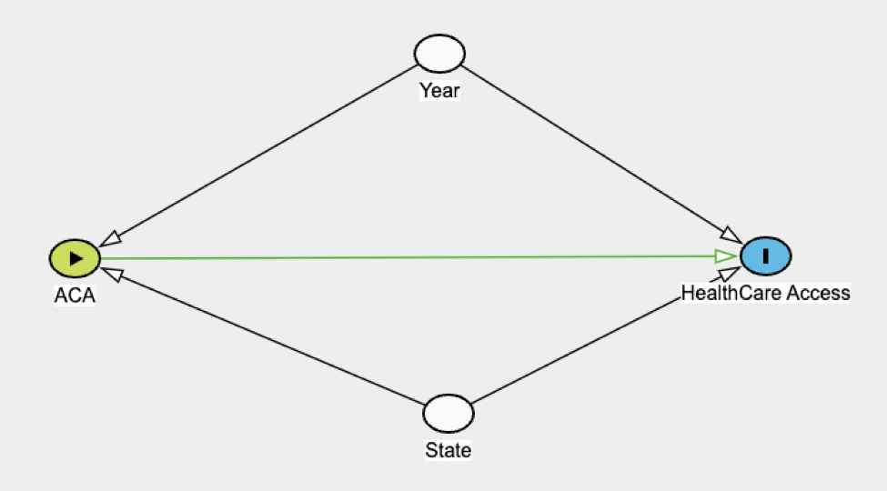

Measurement
1: Measurement and abstraction for ACA Medicaid Expansion
Outcome: Healthcare Access
List of all the possible attributes of the outcome:
Uninsurance Rate
Healthcare Utilization
Healthcare Supply
Sickness
One of the signifying reasons for the Affordable Care Act was to increase the number of Americans with access to affordable healthcare. The uninsurance rate is the proportion of people that do not have coverage. If healthcare access increases, then uninsurance rate is expected to fall. As for insured people, the increasing healthcare demand will strain the limited healthcare supply. It may be hard for individuals to access healthcare specialists unless utilization is low or supply is high. This is why healthcare supply and utilization are essential to monitor.
Attribute 1: Uninsurance Rate
Measurable definition: The percent of Americans that are not covered by healthcare insurance during a given year.
Ideal measurement: The total number of people that do not have health insurance divided by the population in each state for all years between 2005 and 2020.
Feasible measurement: The percent of people for the BRFSS dataset that do not have healthcare coverage for all years between 2005 and 2020.
Measurement of program effect: The difference in percent uninsured between expansion and non-expansion states in a given year. This is repeated for all years between 2005 and 2020. The program effect is the average difference in the percent of people uninsured between expansion and non-expansion states after 2013, minus the average difference in uninsurance before 2013.
Attribute 2: Healthcare Utilization
Measurable definition: The total time spent utilizing healthcare an individual made in a given year.
Ideal measurement: An individual’s average healthcare utilization in a given year.
Feasible measurement: The average number of trips to a doctor an individual made in a given year from the BRFSS data set.
Measurement of program effect: The difference in number of individual doctor visits between expansion and non-expansion states. This is repeated for all years between 2005 and 2020. The program effect is the average difference in average doctor visits between expansion states and non-expansion states after 2013 minus the average difference in doctor visits before 2013.
Attribute 3: Healthcare Supply
Measurable definition: The healthcare supply during a given year.
Ideal measurement: The total healthcare supply differentiated by type for each state in all years between 2005 and 2020.
Feasible measurement: Whether or not an individual words in the healthcare sector.
Measurement of program effect: The difference in the percent of healthcare workers between expansion and non-expansion states. This measurement is calculated for all years between 2005 and 2020. The program effect is the average difference in the percent of healthcare workers between expansion and non-expansion after 2013 minus the average difference in doctors before 2013.
Attribute 4: Sickness
Measurable definition: The time an individual is sick in a year.
Ideal measurement: The total time an individual is sick, weighted by the intensity of the sickness during a given year.
Feasible measurement: The percent of days a person was sick for a given year.
Measurement of program effect: The difference in the percent of days sick between a person in an expansion state and a non-expansion state. The average difference is taken from 2005 to 2020. The program effect is the average difference in percent sick between a person in an enrollment state versus not in an enrollment state after 2013 minus the average difference before 2013.
2: Causal Model

Causal Theory
The Affordable Care Act (ACA) is a federal and state-funded program designed to help American health by increasing healthcare access and decreasing healthcare insurance. States must voluntarily enroll in the ACA, so measured effects are subject to selection bias. The selection is likely due to fundamental differences between states and years. With the ACA expansion, the federal government offers to pay for 90% of Medicaid costs. If a state has high healthcare costs, they are more likely to enroll in the Medicaid Expansion.
A difference-and-difference (DD) model can be used to analyze the causal effects of ACA enrollment on Healthcare access. The DD will compare four groups: pre-treatment expansion states, pre-treatment non-expansion states, post-treatment expansion states, and post-treatment expansion stats.
Hypothesis
From economic tuition, it is estimated that the causal effect of the ACA Medicaid Expansion will decrease the uninsurance rate, increase healthcare utilization, increase healthcare supply, and decrease sickness.